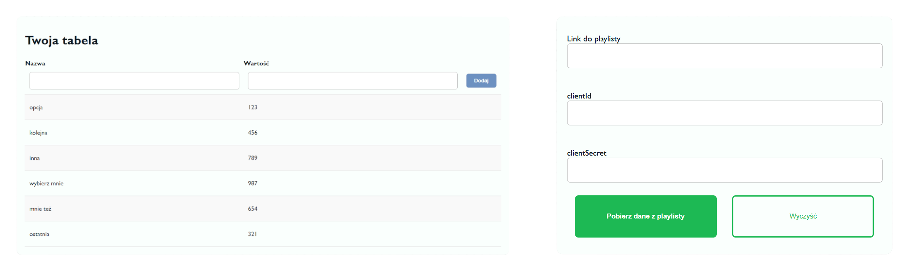

Tworzenie
Twórz własne tabele na dowolny temat lub importuj swoje ukochane playlisty Spotify - wybór jest Twój!
Playlista
Tabela
Dodaj

Modyfikowanie
Dodawaj i usuwaj rekordy z tablic bez większego wysiłku!
WARTOŚCI
Wartości, które są przypisywane do piosenek, to podawany przez Spotify wynik "popularności" piosenki w skali od 0 do 100. Niestety Spotify nie umożliwia na odczyt całkowitej ilości odsłuchań utworu przez API, więc ta statystyka to najlepsze rozwiązanie.
SPOTIFY API
Ze względu na ograniczenia API Spotify oraz charakter projektu, do importu przez API wymagane jest podanie danych deweloperskich (Client ID, Client secret) - są one wykorzystywane jedynie do otrzymania tokena dostępu do API.
OGRANICZENIA
Po niedawnych zmianach w zasadach oraz działaniu API oficjalne playlisty stworzone przez Spotify nie mogą zostać zaimportowane - jedynym obejściem tego problemu jest stworzenie kopii wybranej playlisty.
HISTORIA WERSJI
v1.0 - Pierwsze w pełni funkcjonalne wydanie strony (17.01.25)
v1.1 - Dodano import danych poprzez Spotify (18.01.25)
v1.2 - Dopracowano styl strony, podstawowa walidacja (18.01.25)
v1.3 - Poprawki z kategorii QoL, dokumentacja (19.01.25)
CZĘSTO ZADAWANE PYTANIA
Czy mogę dodać obrazki lub inne multimedia do tabel?
Obecna wersja obsługuje jedynie dane tekstowe i liczbowe. Dodawanie multimediów może być uwzględnione w przyszłych aktualizacjach.
Dlaczego "Najlepszy wynik" jest wspólny dla wszystkich tabel?
"Najlepszy wynik" jest wspólny, ponieważ odnosi się do całej gry, a nie do konkretnej tabeli, co zwiększa wyzwanie i motywuje do odkrywania nowych tabel.
Czy mogę modyfikować tabele zaimportowane z API Spotify?
Tak, zaimportowane tabele można edytować w taki sam sposób, jak te dodane ręcznie.
Czy mogę ustawić własne kryteria porównywania elementów?
Na ten moment kryteria porównywania są ustalone na podstawie wartości liczbowych w tabeli (wybierz największą opcję). Rozszerzenie tej funkcji może być zaplanowane w przyszłych wersjach.